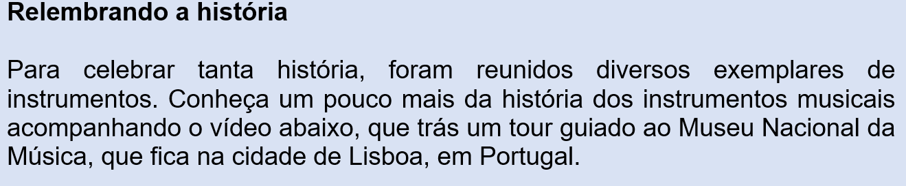

Capítulo 5: Os sons e a música no contexto da indústria petroquímica
Questão-problema:
Você consegue imaginar se não tivesse existido a indústria fonográfica? Se não houvesse, primeiramente, o disco de vinil e, posteriormente, o CD? Como as músicas teriam sido divulgadas?
Contextualizando
Como você vem acompanhando em todo o nosso conteúdo até aqui, a música também é uma linguagem da Arte, inserindo-se em toda a sua história e na evolução artística e cultural dos povos, em uma determinada época e região.
Podemos por um momento, afirmar que a música é a linguagem artística mais apreciada pela população em geral. Afinal, consumimos música a todo instante e por muitas vezes não nos damos conta, seja ao acordar com o despertador, a caminho do trabalho pelo rádio, nos programas televisivos, etc. Quase todo mundo tem uma música preferida, não é?

Reconstruindo conhecimentos:
Música – arte de se expressar por meio de sons
Como acompanhamos no nosso e-book até aqui, os diferentes tipos de ritmo sempre ajudaram a definir gêneros e estilos. Outro elemento de uma composição musical é a melodia, o harmonioso e agradável encadeamento de sons, que deve ter surgido com o canto também muito antes de existirem os primeiros instrumentos. Muito tempo depois foi desenvolvida a técnica da harmonia. Podemos considerar a harmonia como a arte e a ciência da combinação das notas musicais num todo coerente. No sentido amplo é a organização temporal de sons e silêncios (pausas). No sentido restrito, é a arte de coordenar e transmitir efeitos sonoros, harmoniosos e esteticamente válidos, podendo ser transmitida através da voz ou de instrumentos musicais.
Instrumentos musicais
Todo objeto que pode ser utilizado para fazer música pode ser chamado de instrumento musical. Pode ser um objeto grande e complexo com um piano ou pequeno e simples como um apito ou sino. Mas, de fato, existem instrumentos que foram inventados e são fabricados especificamente como instrumento musical. Os instrumentos podem ser tocados individualmente ou em grupos, formando orquestras e bandas. Dentre as muitas variedades e suas especificidades, ao longo da história os instrumentos foram divididos em grupos: Instrumentos de percussão: são utilizados geralmente para dar ritmo à música. Produzem som quando são agitados ou golpeados. Estamos falando dos chocalhos, pratos, castanholas, xilofones e tambores. Os tambores, especificamente em todos os seus tipos possuem uma membrana esticada (que pode ser de pele de animais ou plástico), que vibra enquanto é golpeada. Eles podem ser tocados com as mãos ou com o auxílio de baquetas.

Fonte: http://tudodepercussao.blogspot.com/2015/04/pandeiro-andeiro-e-o-nome-dado-alguns.html
Instrumentos de corda: como podemos imaginar pelo nome, são aqueles instrumentos que possuem cordas esticadas e que dependem da sua vibração para produzir som. Essa vibração pode derivar da fricção das cordas com umarco, no caso dos violinos. violoncelos e harpas, bem como com os dedos ou utilizando paletas, no caso de violões, contra baixos e guitarras.

Fonte: https://br.freepik.com/fotos-vetores-gratis/instrumentos-de-corda
Instrumentos de sopro: são os instrumentos que produzem som a partir de um fluxo de ar que percorre o corpo do instrumento, geralmente gerado pela boca do instrumentista. É o caso do trompete, saxofone,clarinete, trompa e flautas. Podem ser produzidos em metal ou madeira.

Fonte: https://www.clubedamusicadi.com/single-post/2017/09/09/Serie-Harmonica-e-a-Construcao-dos-Instrumentos-de-Sopro
Partitura
É um arquivo com uma representação universal da escrita da música, composta pelas notas musicais e pela reunião de símbolos representando os valores físicos do som (altura, duração, intensidade e timbre). Embora não seja uma regra para saber tocar um instrumento, saber ler uma partitura é uma tarefa obrigatória para um músico.

Conhecendo um pouco mais sobre a música e sua teoria, conseguimos compreender o grande universo que existe por trás da mídia que a reproduz. A indústria sempre se reestruturou para que a música chegasse ao consumidor e fosse um produto de fácil acesso. Ao longo dos anos, várias foram as tecnologias responsáveis para que a música fizesse parte da vida das pessoas, desde o Cilindro Fonográfico (1877) até os pen-drives e cartões de memória nos anos 2000 e, mais recentemente, os serviços de streaming que nos permitem ouvir música no celular a partir de uma mensalidade. Mas a música – e os músicos – podem ser um tanto saudosistas no que diz respeito a dois grandes ícones: o disco de vinil ou LP’s e o Cd’s .

Como é produzido um disco de vinil? Qual a diferença entre o som de um vinil e de um CD?
Os discos de vinil foram, por muito muito tempo, os responsáveis por levar a música à vida das pessoas. Reinaram absoluto por muitas décadas. Com o avanço das tecnologias nos anos de 1990, eles foram gradativamente substituídos pelos Cd’s. A partir disso, eles não foram abandonados, mas se tornou mais difícil adquirir discos de vinil de bandas e artistas. Existem diversas teorias e especulações querendo comprovar qual mídia é a melhor. De fato, devemos entender que os avanços tecnológicos sempre nos trazem melhorias. Mas como a música está estritamente ligada às emoções humanas, podemos resumir que o fato que mais atrai os amantes do vinil não é a qualidade da mídia, mas as características sonoras que só podem ser produzidas por ele. Atualmente, uma onda de interesse pelo vinil fez com que algumas fábricas fossem reativadas no mundo todo. Tudo começou na segunda metade de 2008, quando os proprietários da Deckdisc, informados do volumoso crescimento na venda de vinis nos Estados Unidos e na Europa, depararam-se com a possibilidade de adquirir o maquinário da antiga fábrica e reativá-la. Em setembro do mesmo ano, começaram os estudos que resultaram na aquisição oficial, em abril de 2009. No final de novembro de 2009, depois de meses de restauração, a fábrica finalmente ficou pronta, sendo feitos os primeiros testes com os LPs produzidos. A fábrica tem capacidade para produzir 28 mil LPs e 14 mil compactos por mês. Estabeleceu-se como única fábrica de vinis de toda a América Latina, condição que mantém até hoje.
Uma pausa para pensar:
Quem inventou o disco de vinil?
Acompanhe no vídeo como funciona uma fábrica de discos de vinil
Fonte: https://super.abril.com.br/blog/oraculo/quem-inventou-o-disco-de-vinil/
Assim como o disco do vinil, mesmo com todo o avanço tecnológico, a indústria de Cd’s também não foram totalmente fechadas. Mesmo com uma expressiva queda nas vendas, ainda há uma sobrevida, principalmente para atender uma demanda do mercado de jogos, bem como produtoras que atendem músicos em início de carreira que desejam oferecer algo mais concreto aos seus fãs. O problema passa a ser que, cada vez menos pessoas possuem aparelhos para reproduzir seus Cd’s em casa ou nos automóveis.

Praticando - Reflexão e ação
Os sons que escutamos no dia a dia são bastante diferentes uns dos outros. Independente de ser uma música, que tipos de sons nosso ouvido pode distinguir?
Mesmo em locais ditos silenciosos, podemos ouvir sons, pois na sociedade atual é praticamente impossível permanecermos em absoluto silêncio. Por exemplo, mesmo estando sozinho, na frente do computador, o som das teclas será escutado, ou até mesmo, o som da nossa respiração. vamos refletir um pouco sobre isso?
1)Que som você está ouvindo agora? E a caminho do trabalho, que som ambiente você consegue ouvir?
Resolução: resposta pessoal do aluno.
2) Os instrumentos musicais classificam-se em duas categorias, corda e sopro. Essa afirmativa está:
( ) Errada
( ) Correta
Resolução: os instrumentos musicais classificam-se em: percussão, corda e sopro.
3) Não é de hoje que a música é uma das formas de arte mais inspiradoras. As diferentes combinações de melodias e letras têm o poder de despertar em nós as mais variadas emoções, como alegria, tristeza, saudade, nostalgia, paixão, entre outras. Na déc. de 1870, surge a primeira invenção capaz de armazenar e reproduzir música. Esta invenção recebeu o nome de:
a) ( ) disco de vinil
b) ( ) xilofone
c) ( ) cilindro fonográfico
d) ( ) gramofone
e) ( ) streaming
Resolução: Alternativa C. O cilindro fonográfico foi a primeira mídia que obteve sucesso na gravação e reprodução sonora. A tecnologia era usada no fonógrafo, sendo ambos os dispositivos inventados por Thomas Edison em 1877.
O que aprendi:
Embora não tenha sido possível registrar o som das músicas antes da invenção dos gravadores, sabe-se que elas acompanham os homens desde a sua origem. Em virtude da grande Revolução Industrial, foi possível que fossem inventados e industrializados armazenamentos para reprodução de música, o que a torna a linguagem artística que tem maior alcance para a população.
Existem vários instrumentos musicais que foram divididos em grupos, de acordo com a forma de produção do som e que, conforme as características culturais dos povos, é impossível conhecer todos os instrumentos musicais existentes no mundo.